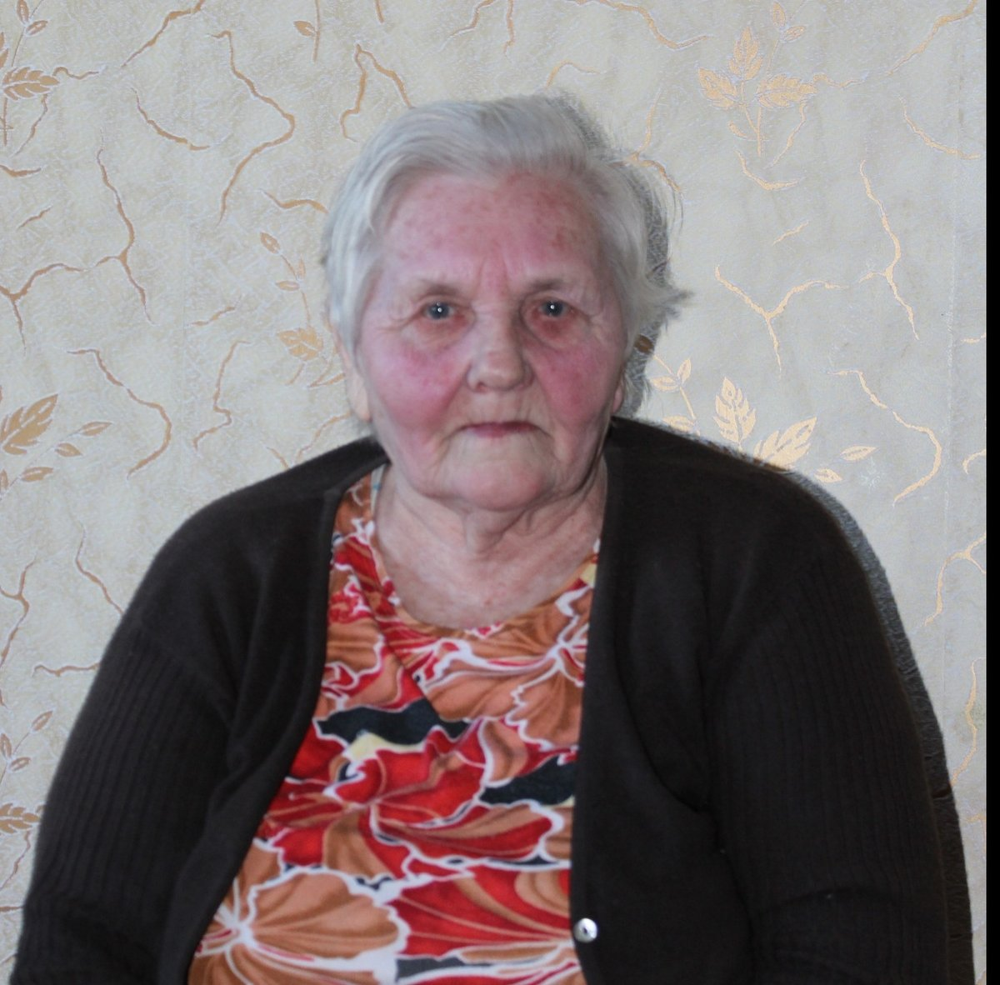
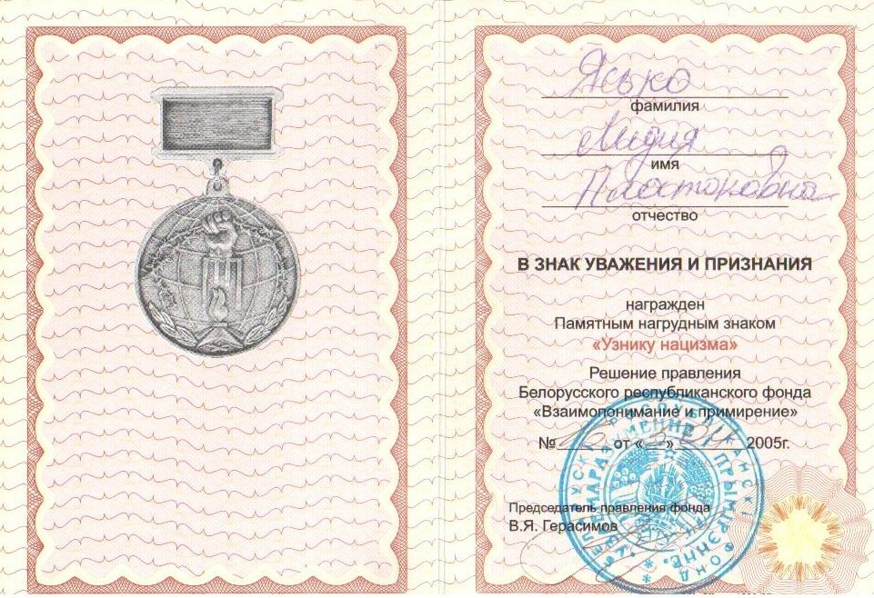

Ясько (Тристень) Лидия Платоновна
🏡 1. Семья и довоенное детство
Родители Платон и Стефанида очень любили детей: Аню, Веру, Николая, Павла и Лиду. Жили в Перуново. Во время рейдов партизан прятали в сундуке в яме ящик с минами, спасая народных мстителей.
⚡ 2. Начало войны и оккупация родного края
В 1942 г. возили сдавать молоко в д. Любань и слышали пулеметные очереди уничтожения Лахвенского еврейского гетто.
⛓️ 3. Облава, арест и отправка в эшелонах
В 1943 г. власовцы сожгли хутора и согнали жителей в Лахву, откуда в запертых товарных вагонах повезли в Германию. В Эрфурте сортировали как скот: право — к хозяевам, лево — в концлагерь.
🌾 4. Рабский труд, испытания и лагеря Германии
Семью забрал немецкий помещик. Бараки кишели вшами. Дети наравне со взрослыми таскали тяжелые тюки сена, мыли, пекли хлеб, чистили хлева. За пять минут отдыха следовало жестокое наказание.
🕊️ 5. Освобождение союзными и советскими войсками
В 1945 г. освобождены американскими войсками, отказались от вербовки в США и через реку Одер переданы советским войскам.
🌱 6. Возвращение на пепелище и мирный труд
В Перуново дом уцелел. Отец мастерил веретена и корыта (начоўкі), ходили продавать в Давид-Городок и Ольшаны. В хлеб добавляли желуди, вереск и шелуху. В 1950 г. вышла замуж, вырастила двух дочерей — Тамару и Светлану.
📷 Фотографии и архивные документы (2)
Фото 29. Ясько Л.П., 2013 год

Фото 30. Памятного нагрудного знака «Узника нацизма» на имя Ясько Л.П.